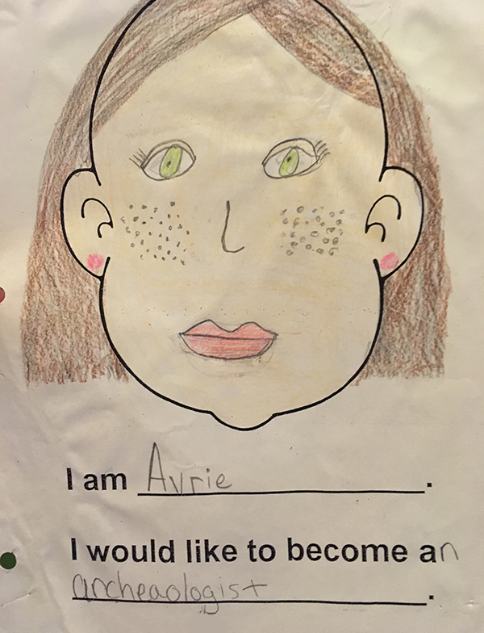

a girl is a shiny bug, a girl is a glowing fish
As a child, I was enamored with bugs, particularly shiny, iridescent ones like beetles. I loved to collect them and look at them with my National Geographic microscope kit that we got from Target. Peering through the lens, I was taken away by what I could see; witnessing a layer of life unavailable to me without this tool. It felt like a secret world.
Bugs were my first love, my second was the ocean. In the fourth grade I decided I wanted to be an underwater archaeologist. I would sit at our family desktop computer for hours and create PowerPoints, compiling information on bioluminescence and buoyancy to share with my family. I loved the deep sea especially. Along with my PowerPoints, I would run laps around my block, and religiously play Endless Ocean on the Wii to prepare for my career as an underwater archaeologist.

I remember the wave of anxiety-excitement I would experience in my stomach as my pixelated avatar dived deeper and deeper into the abyss within the game. Inside the deepsea trench, my avatar was met by oarfish, goblin sharks, and giant siphonophore. I was fixated by these alien creatures on Earth, and what felt like another secret world I was excited to be in as an adult.
My life outside of bugs and sea creatures was one of hyperfemininity. I would roll my pink plastic poodle backpack down the halls of Parkside Elementary School and write with pink glittery pens with poofs on the end. Around this time, I got my first cell phone. It was a flip phone, and considering my girlishness one would expect that I would have a pink case with charms. But I chose a plush, bright red lobster case. My acts of capturing bugs and obsessing over ocean life were never contradictory to my hyper-femininity. In fact, I think they have a lot in common, and I’ve always associated them together.
I wasn’t just interested in bugs and sea creatures purely because they were unique or otherworldly; there was a resonance in their forms. I felt connected to the iridescent, glittering surfaces of beetles and bioluminescent fish. I see now that they were camouflage artists like me, their sparkling exteriors both arresting and protective, allowing them to blend in, deceive, and survive.
I’ve been considering how sparkly and shiny exteriors helped me survive, too. I could perform the role that others expected of me and maintain a level of expression within it, even as I repressed parts of myself I was realizing were not easily contained—
parts that were queerer, messier, harder to reconcile with my small world of conservative Indiana, surrounded by peers in school with more money and more stability.
I often still feel like this. Day-to-day
I easily identify with my self-diagnosed failure of womanhood and femininity, layered beyond just queerness. Femininity still offers me a form of respite, a kind of temporary normalcy where I can still express myself, especially in professional spaces, academia, or among conservative family members who would disapprove or judge me, who would not understand my complexities.
I find it funny writing this on my laptop as my background is a field of glowing jellyfish, and I’m thinking about the pair of iridescent freshwater pearl earrings featuring a hand-painted beetle I purchased a couple months ago. I feel like my 10-year-old self; I’m still putting bioluminescent sea creatures on my computer and collecting bugs, finding solace in what they hide behind their glittering and iridescent forms.